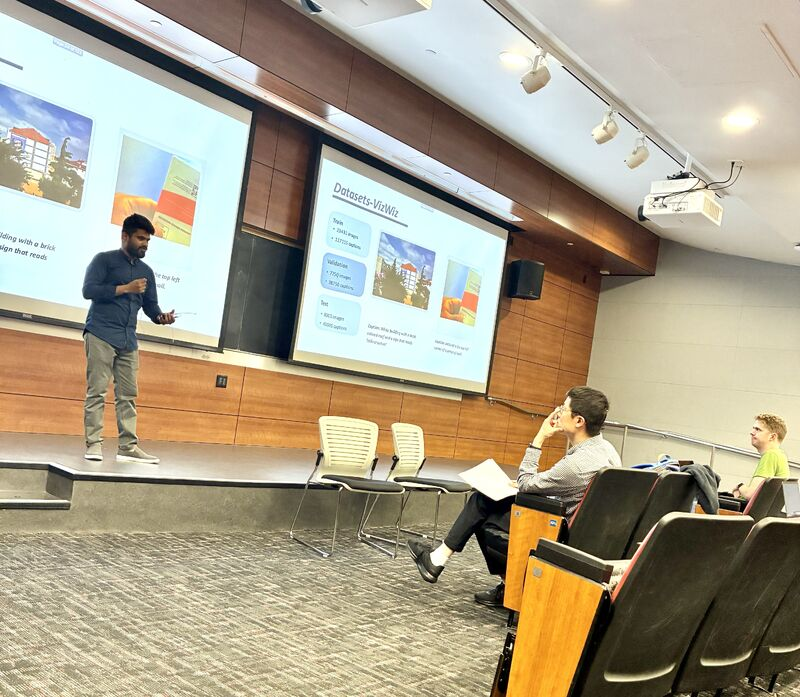

Multimodal AI / Assistive Tech
See Beyond: AI image captioning for the visually impaired
A vision-language AI project designed to help visually impaired users access visual content through real-time, context-rich captions and auditory feedback.

What we built
I had the privilege of presenting the solution we built for See Beyond, a group project that uses AI to enhance the lives of visually impaired users by generating detailed image captions in real time.
The core of the project uses advanced vision-language models such as BLIP-2 and LLaVA, fine-tuned with real-world datasets like VizWiz to generate meaningful, context-rich descriptions from images. We used PyTorch, Hugging Face Transformers, React, and a Flask backend to create a seamless interface with speech-to-text and audio description workflows.
Key technical highlights
- Fine-tuned BLIP-2 for image captioning and evaluated caption quality with cosine similarity, BLEU, ROUGE, and METEOR metrics.
- Leveraged CLIP ViT and OPT-2.7B inside the BLIP-2 framework for semantic understanding and language generation.
- Fine-tuned the Q-Transformer to improve alignment between image embeddings and textual descriptions.
- Built a React and Flask application for image processing, UI interaction, and generated audio descriptions.
- Explored Word2Vec and GloVe embeddings to improve semantic quality and caption relevance.
Key takeaways
The most important outcome was real-world impact: enabling visually impaired users to access visual content through auditory feedback. Working with VizWiz also forced us to handle real, imperfect images rather than polished benchmark data, which made the data processing and model evaluation work more meaningful.
BLIP-2 outperformed LLaVA in our project setup, showing strong potential for assistive image captioning systems when paired with the right dataset, evaluation strategy, and user-centered interface.
Future prospects
- Visual Question Answering for interactive, personalized image queries.
- Expanded datasets with more diverse samples from visually impaired users.
- Multilingual captioning for broader accessibility across languages.
- Contextual personalization so captions adapt to user preferences and needs.
Huge thanks to Professor Xuezhe Ma, TA Nan Xu, Joshua, and my teammates Anika, Yashvi, Nisarg, and Nayan for their collaboration and support.
React or ask a follow-up
Comments and reactions are powered by GitHub Discussions under the connectwithsajid brand.